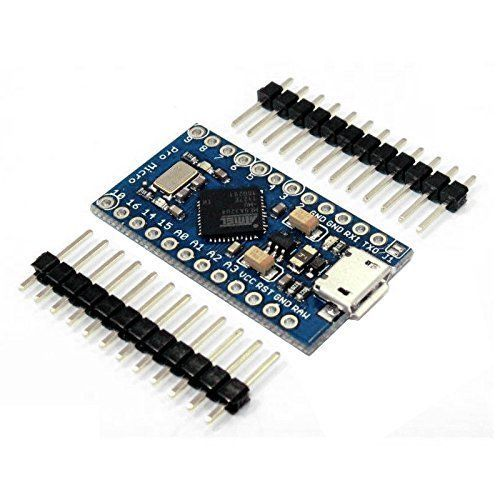

It Hurts: Setting Up the Bluetooth Module
I control my longboard’s motor and lights with an Arduino, a Bluetooth module, and my Android phone. It was a pain, but I got it working, so I’d like to make life easier for other people interested in doing what I did. This post is about setting up the Bluetooth module - the phone part will come later. An exhaustive parts list is at the end.
Important Notes
RX/TX Issues ● The Bluetooth module used here uses two-pin serial-communication, which is also used by USB. In fact, on many Arduino devices, the USB port is linked to the RX/TX pins. This means that if the Arduino serial-monitor and Bluetooth module are used at the same time, data sent to one also gets sent to the other. For those looking to work around this limitation, there are various libraries that enable serial communication on pins other than RX/TX, such as SoftwareSerial, NewSoftSerial, and AltSoftSerial. Each library has its respective drawbacks, and I never got SoftwareSerial to work with the Arduino Uno or Arduino Pro Micro. Fortunately, the Pro Micro’s serial pins are separate from the USB interface (see the first bullet under “Input and Output” under “documentation”. So I used the Pro Micro. If you choose to use an Arduino that does not have this separation, such as the Uno (and most others), either use one of the libraries I mentioned, or append debug info to a string while the program runs, and print that string once the program is done. That way, the Bluetooth only recieves information that it’s not meant to see once it’s no longer needed for testing. This is an example. Keep that in mind if you use the Uno; the rest of this post is based around the Pro Micro.
Programming Issues ● Reguardless of the model used, I sometimes had problems programming Arduinos when the Bluetooth module was connected to RX/TX. My fix was to cut power to anything connected to RX/TX, program the Arduino, reconnect whatever was on RX/TX, and then reset the program (I reset the Pro Micro by unplugging and replugging its USB connection).
Soldering Issues ● When I first soldered the header pins onto my Arduino, the headers were stable, but the solder joints didn’t have enough solder, causing pins to randomly lose connection. For people who mostly program, trying to find this bug in your code will not be fun - make sure your hardware is setup correctly.
Setting Up the Bluetooth Module First, hook up RX on the Bluetooth module to TX on the Arduino, TX on the Bluetooth module to RX on the Arduino, VCC on the Bluetooth module to VCC on the Arduino, and ground on the Bluetooth to ground on the Arduino.

Now it’s time to program the Arduino. The first program we are going to write will be used to send and retrieve the Bluetooth module’s settings:
After uploading this code, make sure the serial monitor’s baud rate is 115200, and that the serial monitor’s line-ending mode is set to none. Next, send “$$$” through the serial monitor. The red light on the Bluetooth module should start blinking faster, and the serial monitor should print “CMD”.
Troubleshooting ● Talking to the Bluetooth module is often the hardest part. If the light doesn’t blink faster, the Bluetooth module either didn’t get the message, or couldn’t understand the message. If the light blinks faster but nothing appears in the serial monitor, the Arduino/serial monitor did not read what the Bluetooth module sent back. If trash other than “CMD” appears in the serial monitor, the serial monitor incorrectly interpreted what was sent back - the serial monitor’s baud rate is likely wrong. If only part of “CMD” appears, try again - sometimes data is lost at high baud rates. If the output is incorrect but the light blinks faster, as a last resort you can follow along with the post - you may be able to change the Bluetooth module’s baud rate, fixing your issue.
Now that the light is blinking faster, the bluetooth is in command mode. In command mode every command needs to be terminated with a carriage return, so change the line-ending mode in serial monitor to carriage return. Enter “x”, and the Bluetooth module should respond with its settings. Now enter “SU,96”, which will lower the baud rate of the Bluetooth module. Enter “—”, which will exit command mode, and the Bluetooth module should then blink more slowly. Power off the Arduino, change instances of 115200 in your code to 9600, reprogram the Arduino, open serial monitor, change the line-ending mode back to none, and change the serial monitor baud rate to 9600.
You’re done! For some reason, this part of my longboard project took me forever. From here you can continue to explore the Bluetooth module, which has further documentation here.
Parts
-
Arduino Pro Micro - The Arduino controls pretty much everything under the longboard. I chose the pro micro because it’s small and cheap ($6 on amazon/ebay). It also happens to have dedicated TX/RX pins for when software serial doesn’t work, but that belongs in a different longboard post.
 -
Bluetooth Mate Gold - The Bluetooth module is what we’ll be setting up today, at $35. The Bluetooth Mate Silver also works, it’s only $25 but has a much smaller range.
Parts Total: ~$41
Tools
- Computer - Anything with an OS and a free USB port will work.
- Micro-USB Plug - You’ll need to program the Arduino.